Spin complet
Aucune situation de Spin ne te prend au dépourvu, du premier tapis de la partie au dernier. De 25 à 2 BB, à trois et en tête-à-tête, chaque option chiffrée en blindes, et le gros jackpot calculé en ICM et en euros de ton buy-in.
solveur préflop · tracker · HUD
Solve It Poker calcule la bonne décision préflop pour chacune des 169 mains, en Spin, en tournoi et en cash game. Puis il lit tes vraies mains, compare chaque décision à ce calcul, et te donne le montant : tant de blindes perdues, sur telle situation, à telle place.
Le solveur dit ce qu'il fallait faire. Le tracker mesure ce que tu as fait, avec exactement les mêmes chiffres. L'entraînement te refait jouer tes erreurs jusqu'à ce qu'elles partent. C'est la même référence du début à la fin — c'est ce qui rend le montant d'un leak crédible.
Aucune situation de Spin ne te prend au dépourvu, du premier tapis de la partie au dernier. De 25 à 2 BB, à trois et en tête-à-tête, chaque option chiffrée en blindes, et le gros jackpot calculé en ICM et en euros de ton buy-in.
Rejoue le coup comme à la table : clique l'action de chaque joueur avant toi, et lis ta stratégie. De 100 à 2 BB avec ante, du 3bet au 5bet, l'ICM de la bulle et de la table finale — et tes tapis exacts, KO progressif compris, avec « Calculer mon spot ».
Tes ouvertures et tes défenses en cash, rake compris. Les ranges à 100 BB, de la table à 6 au tête-à-tête, calculées avec le rake de Winamax — rien sans flop — et les pots gonflés des tables Escape et Hold-up. Tes tapis réels, de 20 à 250 BB, avec « Calculer mon spot ».
Assieds chaque adversaire à sa place — huit types calibrés sur de vraies statistiques, ou un joueur de ta base — et les ranges se recalculent pour cette table-là. Tu as ton propre plan sur un spot ? Enregistre-le : le tracker juge alors tes décisions sur tes ranges. Chaque range s'exporte en image, en PDF ou au format des solveurs.
Tu vois ta session se construire main après main. L'application trouve seule tes dossiers d'historiques, affiche le résultat en jetons, en blindes ou en euros, et te prévient quand la séance part de travers.
Tu choisis ce que tu veux voir sur chaque adversaire, et rien d'autre. Dix-sept statistiques, l'ordre, une ou deux lignes, la taille, les couleurs, la transparence — et au clic, sa fiche complète avec sa courbe, son type et tes notes. Sur les tables Escape, où les adversaires changent à chaque main, le HUD les reconnaît à chaque fois.
Combien tu as réellement gagné, en euros, pas en blindes théoriques. Une courbe par jeu — Spin, tournois, cash game —, et en cash le rake que tu as payé et tes gains avant rake. La souris sur la courbe donne la partie, sa date et son résultat.
Tu finis par connaître les réguliers de tes tables. Chaque adversaire a sa fiche, sa courbe et son type, et tu peux classer toute ta base sur n'importe quelle statistique pour repérer ceux qu'il faut éviter — et ceux qu'il faut chercher.
La question à laquelle personne ne répond : où part l'argent ? Chaque décision préflop est comparée au calcul, et tes fuites sont classées par ce qu'elles te coûtent vraiment, en blindes. Tu travailles la première de la liste, pas celle qui t'agace.
Tu perds peut-être à une seule place. Ton gain à chaque siège est comparé à celui des autres joueurs assis au même siège dans tes parties, avec la marge du hasard — pour savoir si c'est un vrai trou ou du bruit.
Mauvaise passe ou mauvais jeu ? Tes gains réels et ton EV tous-tapis sur le même graphique, avec l'écart-type, la fourchette de confiance et ta pire série. Chaque chiffre a son explication au clic : aucun n'est là pour faire sérieux.
Dix mains par jour, gratuites, juste en téléchargeant le logiciel — sans abonnement ni carte bancaire. Pas des situations au hasard : celles que tu as ratées la veille, sur une vraie table, avec la correction expliquée. En Spin, en tournoi, en cash, ou tous les formats mélangés. Illimité avec Improve.
Tout est calculé sur ton ordinateur : tes historiques ne sont jamais envoyés. Interface en français, anglais, espagnol et italien.
Captures de l'application, avec des mains de démonstration.
La bibliothèque de cash à 100 BB, avec une colonne par type de pot : ordinaire, ou gonflé avant la donne sur les tables Escape et Hold-up. Chaque action affiche sa taille et sa fréquence, chaque main sa rentabilité.
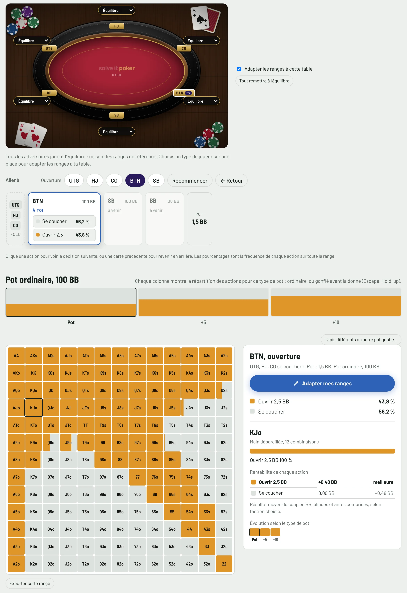
Assieds un type de joueur à chaque place de la table : les ranges sont recalculées pour cette table précise, les mains dont l'action change sont signalées, et le gain espéré s'affiche.
Ici, au bouton à 20 BB en tournoi, avec deux joueurs serrés dans les blindes : le bouton ouvre toutes ses mains.
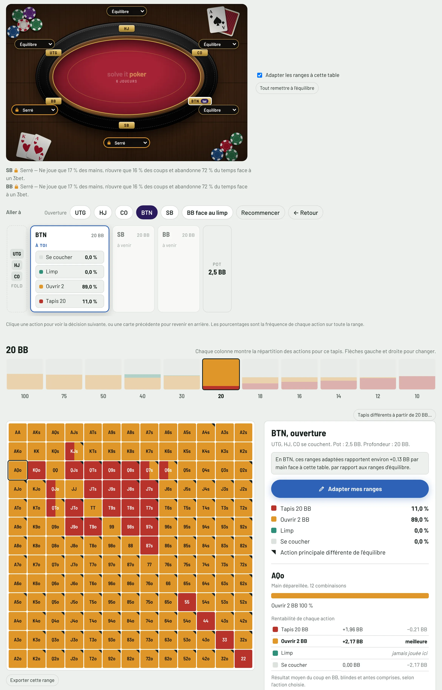
Clique l'action de chaque joueur, comme sur une vraie table : ouverture, call, squeeze, limp, 3bet, 4bet, tapis. Chaque option affiche sa taille et sa fréquence, et l'évolution de la main selon le tapis.
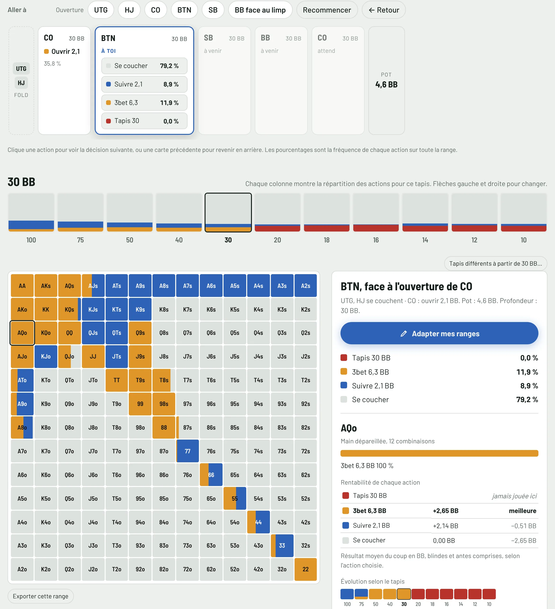
Toutes les profondeurs d'une partie, du premier coup au dernier. Pour chaque main : l'action conseillée, la rentabilité de chaque option, et ce qu'il faut faire si on te relance à tapis.
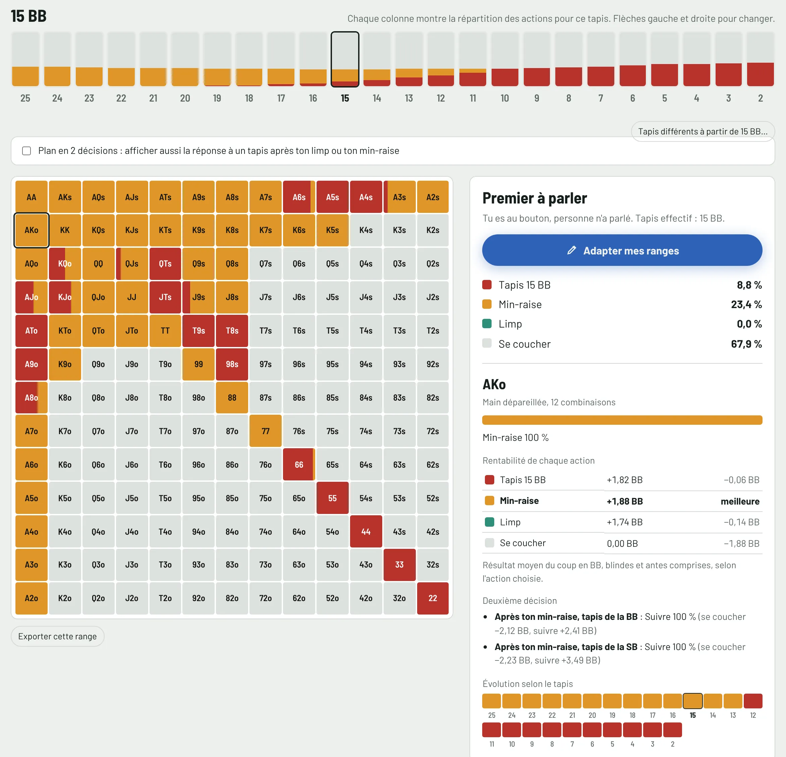
18 BB au bouton, 5 en small blind, 11 en big blind ? Saisis les tapis, lance le calcul, lis la stratégie complète en quelques secondes.
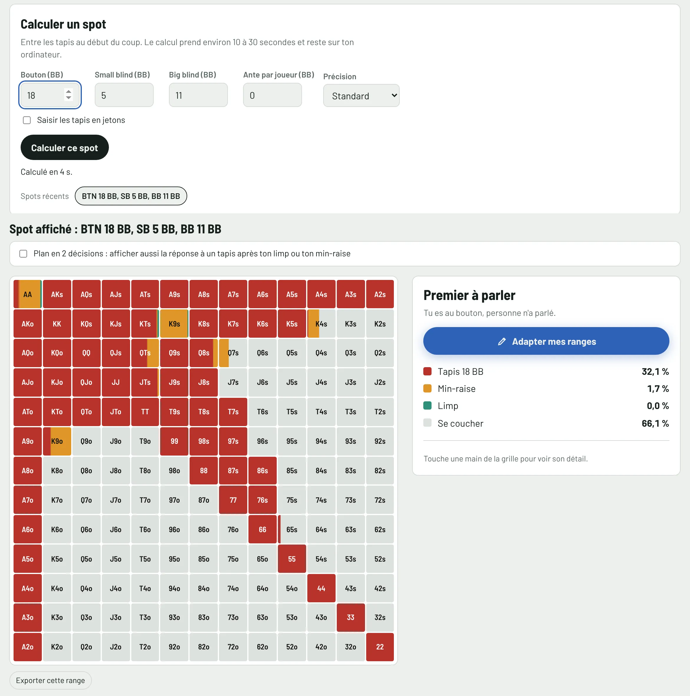
Toutes tes grilles au même endroit, profondeur par profondeur. Celles que tu as modifiées sont encadrées en vert ; les autres montrent celle du solveur. Un clic ouvre la situation pour la retoucher.
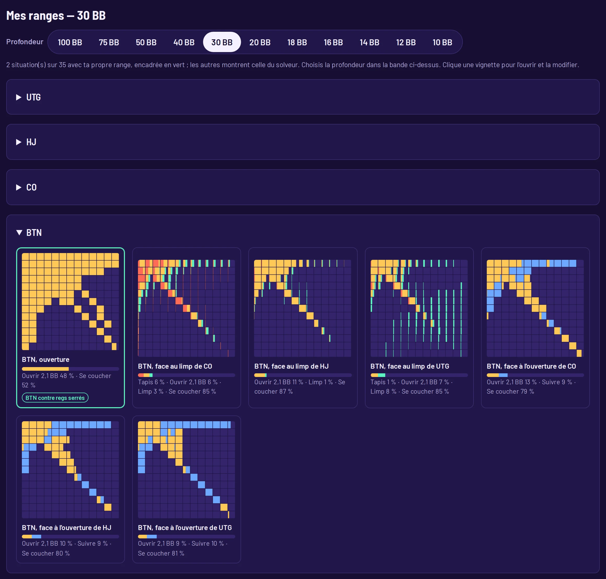
Une situation, ta décision, la correction du solveur. Ici en cash game, dans un pot gonflé : à toi de parler avec 8♠5♥ après le fold d'UTG.
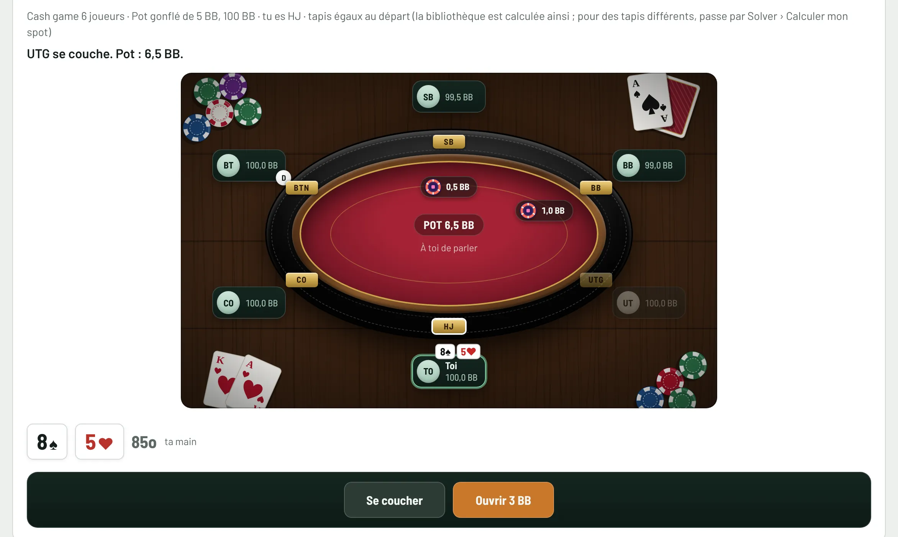
Le tracker repère chaque situation, compare ton choix à celui du solveur avec les mêmes mains, et te dit où tu perds le plus. « Voir la range » ouvre la bonne grille.
Une case suffit pour juger tes décisions sur tes propres ranges plutôt que sur celles du solveur.
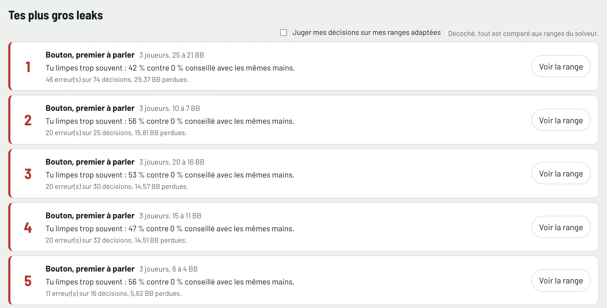
Un siège n'est pas l'autre : la grosse blinde perd toujours. Solve It Poker compare donc ton gain à chaque place à celui des autres joueurs assis à la même place, dans tes parties, et te dit si l'écart dépasse la marge du hasard.

Pour chaque main : tes décisions, tes erreurs, les BB perdues, le coût pour 100 décisions et la situation où ça se joue.
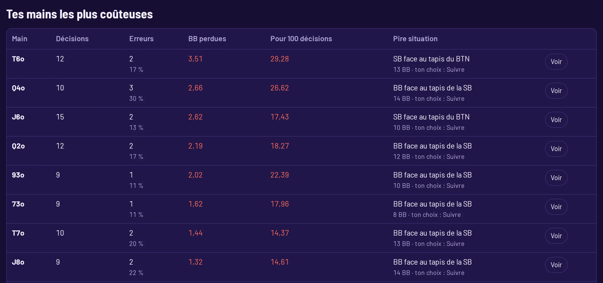
Une courbe par jeu. En cash game, la ligne pleine est ton résultat réel, rake retiré ; les pointillés, ce que tu aurais gagné sans le rake. Rake payé et BB de rake pour 100 mains sont calculés pour toi.
En tournoi, les montants viennent des récapitulatifs présents sur ton ordinateur : ce n'est pas le bilan de ton compte.

Gains réels, EV ajustée des tapis, gains avec et sans abattage : tu vois si tu gagnes grâce à tes décisions ou malgré elles.
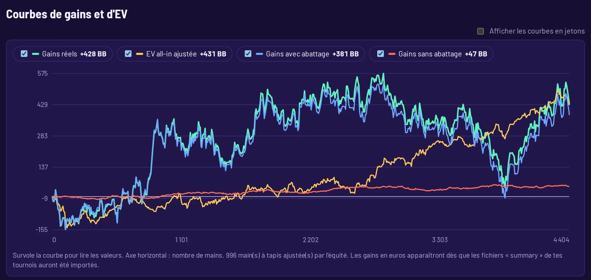
Les statistiques de chaque adversaire sous son pseudo, son type en un logo, sa courbe de gains, et sa fiche complète au clic : toutes ses statistiques, son étiquette que tu poses toi-même, et tes notes.
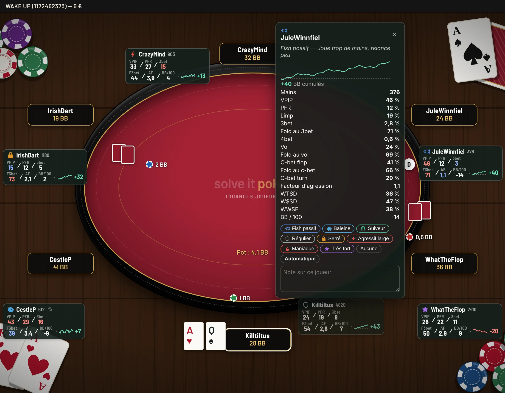
Dix-sept statistiques au choix, l'ordre d'affichage, l'aperçu en direct du panneau tel qu'il sera sur la table, et tous les réglages d'affichage — pour le Spin, les tournois et le cash, ensemble ou séparément.

Un solveur qui ne dit pas comment il calcule demande de le croire sur parole. Voici la méthode, et ce qu'elle ne sait pas faire.
Aucune formule ne se renouvelle sans que tu l'aies voulu, et la résiliation se fait en ligne en trois clics, sans écrire à personne.
Une formule, le Spin, les tournois et le cash game compris
Solve
Le plus complet
Improve
Track
Prix TTC. Chaque formule couvre le Spin, les tournois et le cash game, sur deux ordinateurs. Tu peux changer de formule à tout moment depuis ton espace client. Résiliation en ligne en trois clics : . Réservé aux personnes majeures.
Gratuit à installer : l'entraînement est ouvert tout de suite, dix mains par jour. Le reste s'ouvre avec l'essai ou l'abonnement.
Besoin d'un coup de main pour l'installation ou le HUD ? Aide et installation.
Le solveur, non : il est interdit pendant le jeu, et Solve It Poker le verrouille automatiquement dès qu'une table est ouverte, jusqu'à deux minutes après ta dernière main. Le tracker et le HUD dépendent du règlement de ta room : certaines autorisent les logiciels qui enregistrent tes statistiques et celles que tu as recueillies sur tes adversaires, d'autres tiennent une liste de logiciels autorisés. Tant que Solve It Poker n'y figure pas, n'utilise pas son HUD à leurs tables — l'import de tes historiques après la session reste possible.
Solve pour étudier les ranges, Track pour analyser tes mains et utiliser le HUD, ou Improve pour tout avoir, avec l'accès direct à la bonne range depuis chaque erreur. Chaque formule couvre le Spin, les tournois et le cash game.
Oui, à tout moment, depuis ton espace client. La différence est calculée au prorata sur ta prochaine échéance.
Sur Mac avec macOS 12 (Monterey) ou plus récent, à puce Apple ou Intel, et sur PC Windows 10 ou 11 en 64 bits. Un abonnement s'utilise sur deux ordinateurs, un seul ouvert à la fois.
Sur Mac, ouvre le fichier .dmg et glisse Solve It Poker dans Applications. Sur Windows, lance le fichier .exe et suis l'installation. Le pas-à-pas, les autorisations du HUD sur Mac et les conseils pour plusieurs tables sont sur la page Aide et installation.
Winamax et PokerStars (historiques en anglais pour PokerStars) : Spin, tournois et cash game, tables Escape et Hold-up comprises, avec le suivi en direct et les gains en euros. D'autres salles pourront être ajoutées selon les demandes des abonnés. Les rooms n'offrent pas de connexion directe aux outils tiers : Solve It Poker lit les fichiers que ton logiciel de poker enregistre.
Pas forcément. En tournoi, ils sont lus dans les récapitulatifs de fin de tournoi présents sur ton ordinateur ; en cash, directement dans tes mains, rake déduit. Les parties jouées sur une autre machine, et celles dont ton logiciel de poker a effacé les fichiers, n'y figurent pas. Le bilan exact de ton compte, c'est l'historique de caisse de ta room.
Chaque profil reproduit les statistiques d'un type de joueur. Sur la petite table du solveur, tu choisis le profil de chaque place : le solveur calcule la meilleure réponse à cette table précise, les places laissées sur « Équilibre » jouant les ranges de référence. Depuis la fiche d'un adversaire du tracker, « L'asseoir à la table du solveur » place ses statistiques réelles au siège que tu choisis.
Non pour les calculs : toutes les grilles et toutes les analyses se font sur ton ordinateur, sans envoi de tes mains. La connexion sert seulement à vérifier ton abonnement de temps en temps.
Non : une décision dépend des tapis, des blindes et de la répartition des gains. Le buy-in et le multiplicateur servent à afficher la rentabilité en euros en mode jackpot. Les habitudes des adversaires, elles, varient selon les limites : c'est le rôle des profils.
Le Spin (3 joueurs et tête-à-tête, de 25 à 2 BB : Expresso chez Winamax, Spin & Go chez PokerStars), les tournois aux tables de 5 et 6 joueurs (de 100 à 2 BB) et le cash game Hold'em, du tête-à-tête à la table pleine ; l'Omaha est ignoré. Il juge tes décisions préflop au Spin, en tournoi et en cash autour de 100 BB ; après le flop, il trace tes gains et ton EV mais ne juge pas encore tes décisions.
Non. Les historiques sont lus et gardés sur ton ordinateur. Tu peux les effacer à tout moment depuis le tracker.
Deux façons d'essayer. Sans rien payer : télécharge le logiciel, l'entraînement est ouvert sur dix mains par jour, sans abonnement ni carte, sans limite de durée. Pour tout essayer : 7 jours sur la formule de ton choix, avec ta carte bancaire. Rien n'est prélevé pendant l'essai, et tu reçois un e-mail de rappel avant la fin. Sans résiliation avant la fin de l'essai, l'abonnement démarre automatiquement.
En trois clics : « Résilier votre contrat » (en haut et en bas de chaque page), tu indiques ton nom et ton e-mail, puis tu confirmes. Tu reçois un accusé de réception par e-mail avec la date de fin, et tu gardes l'accès jusqu'à la fin de la période payée.
Tu gardes 30 jours de lecture seule pour les exporter (image, PDF ou texte), puis l'application revient à l'entraînement gratuit. Tes historiques de mains, eux, restent sur ton ordinateur.
Non. Solve It Poker est un logiciel d'analyse : il calcule des grilles de décision et relit les historiques de mains déjà présents sur ton ordinateur. Il n'organise aucune partie, n'accepte aucune mise, ne détient aucun fonds et ne se connecte à aucun site de poker. Pour jouer, tu utilises ton logiciel de poker habituel, séparément.
Non. Solve It Poker est un logiciel indépendant, ni affilié à Winamax ni à PokerStars, ni approuvé par eux.